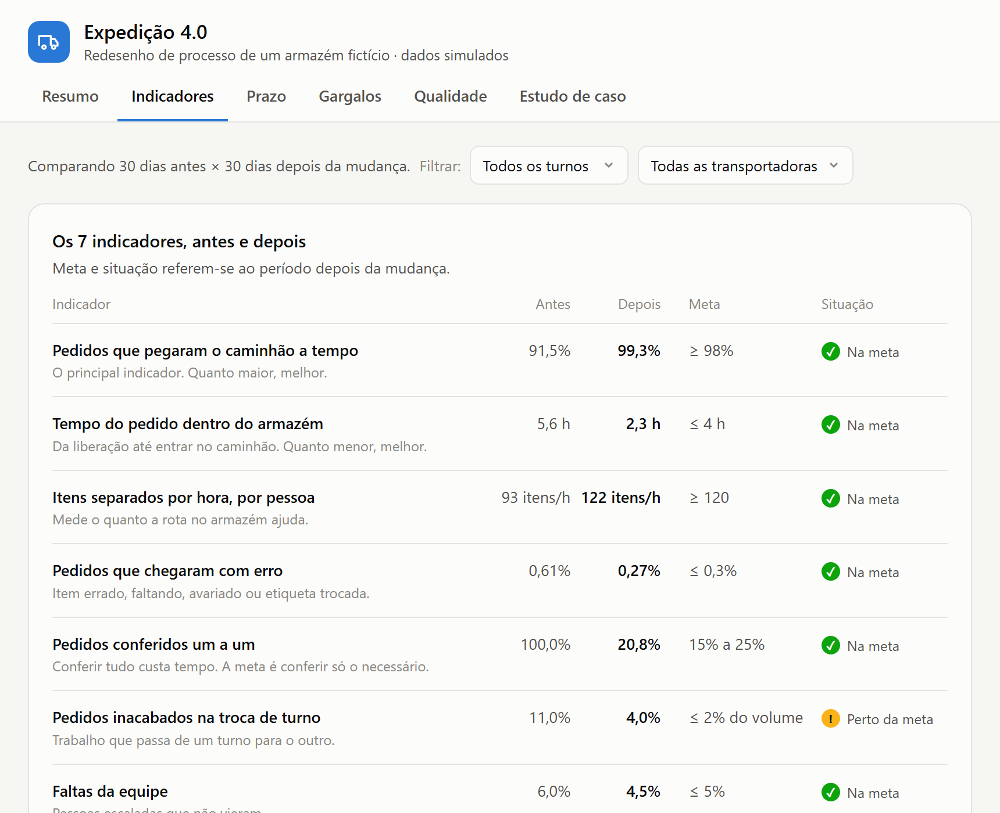

Processos Gerenciais + desenvolvimento front-end, do diagnóstico ao dashboard.
Num CD de e-commerce fictício com 8.000 pedidos por dia, isso dá cerca de 680 pedidos por dia que só saem no dia seguinte. O cliente sente o atraso.
Nem tudo bateu a meta: o backlog na troca de turno caiu de 11% para 4%, e a meta era 2%.
Antes × Depois lado a lado, filtros por turno e transportadora, e o estudo de caso completo no mesmo link.
